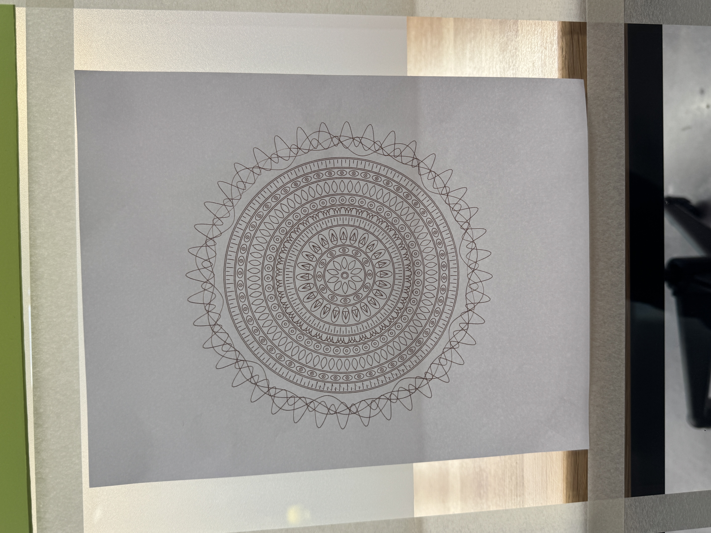

The pen plot

This is a totem pattern consists of different rings of repetitive shapes.
I first created different shapes using simple geometric shapes, and then I arranged them in a
circular pattern using the polar coordinate system. On the very outer ring, I drew several sine and cosine waves with different
frequenceis and amplitudes. Together with everything I created this interesting looking circular totem pattern.
By explorting them in a pvg file, I was able to pen plot the pattern using a brown pen, to create a more natural and sacred feeling.
Below is the original sketch of the pattern.